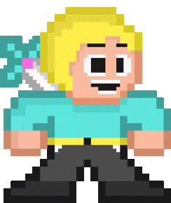
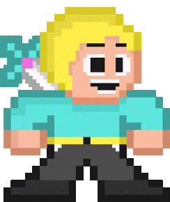

La historia de los videojuegos tiene su origen en la década de 1950 cuando, tras el fin de la Segunda Guerra Mundial.

Las potencias vencedoras de la guerra construyeron los primeros superordenadores programables.
La historia de los videojuegos tiene su origen en la década de 1950 cuando, tras el fin de la Segunda Guerra Mundial.
Las potencias vencedoras de la guerra construyeron los primeros superordenadores programables.
Donkey Kong (1981) fue el primer juego en tener una historia, pero más importante que eso, fue el origen de Mario como personaje. Miyamoto siendo diseñador pensaba que los personajes debían verse atractivos.
El último videojuego publicado para PlayStation fue FIFA Football 2005, el 12 de octubre de 2004 en los Estados Unidos, Hugo: Black Diamond Fever en 2005 para Europa, y Legendary Hits: Dewprism en el 2007 (aunque es un juego de 1999) para Japón.
 
